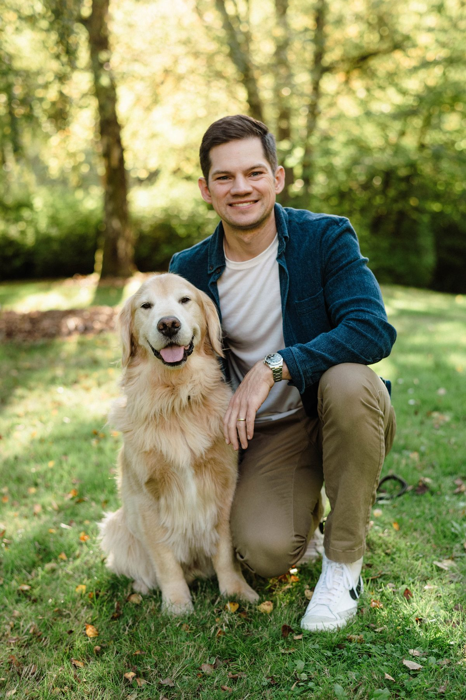

About
I fly high and dive deep
A product marketer at heart, I've run paid search and social, GTM launches, CRM and email, web, and brand myself, so I know how the work gets done on the ground. I also know how to set the bigger picture and build the team that gets you there.
I have spent almost two decades building teams and revenue. At Google I spent 13 years across consumer tech, payments and infrastructure, and built the team that 5x'd sales and cut CAC by 50% at Google Domains.
At Squarespace I was promoted by exception to Senior Director within a year, overseeing Domains, Acuity, Unfold, Bio Sites and Email, business lines with mid-nine-figure combined revenue, with 13 direct reports.
Now I advise and consult through Tidemark, as a fractional CMO for scale-ups and early-stage founders.

I grew up in Canada in an entrepreneurial family, and my background also includes consulting at Capgemini. I also spent eight years in domains, including registry co-marketing partnerships with organizations such as CIRA.
One more thing: I'm an inventor on 28 US patents spanning recommendation systems, ad bidding and relevance, contextual content, and image and video.